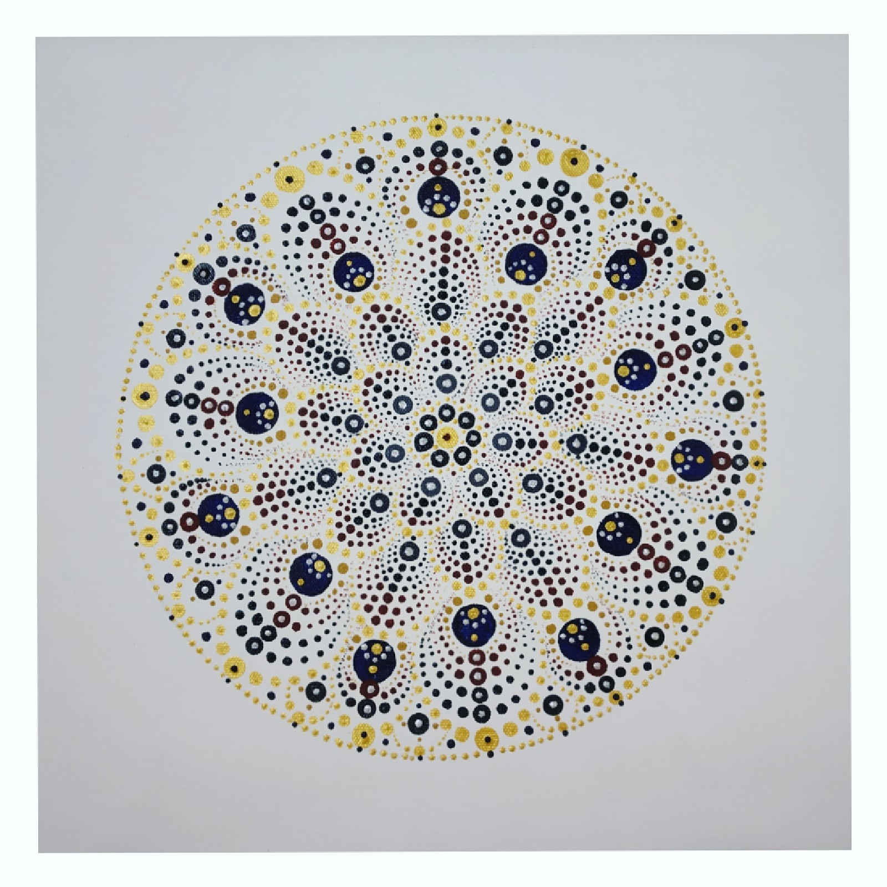

FLOWER MANDALA ON WHITE CANVAS
In frame is the flower pattern dont mandala on a white canvas.
the mandala art on white canvas has a very different soothing look.
the colours dont look too much shiny but at the same time appears very classy.
here i have tried to get the effect of a mandala dot painting on a white canvas instead of black one.
the flower petal are following the same pattern all over.
Materials Required :
1 Canvas (16*16) inch.
paint brush.
dark blue ,silver, golden, brown acrylic colour’s.
Mandala dot art tools.
Any circular object or a compass.
steps one can follow(if needed) :
First take a plain canvas and marke the centre and make a circle.
Then paint the border of circle with brown dots using mandala tool.
After that put a big blue dot and start with the petals.
With black being the inner dot then followed by brown and then golden.
After that the last layer has ochre yellow dots from down to up form.